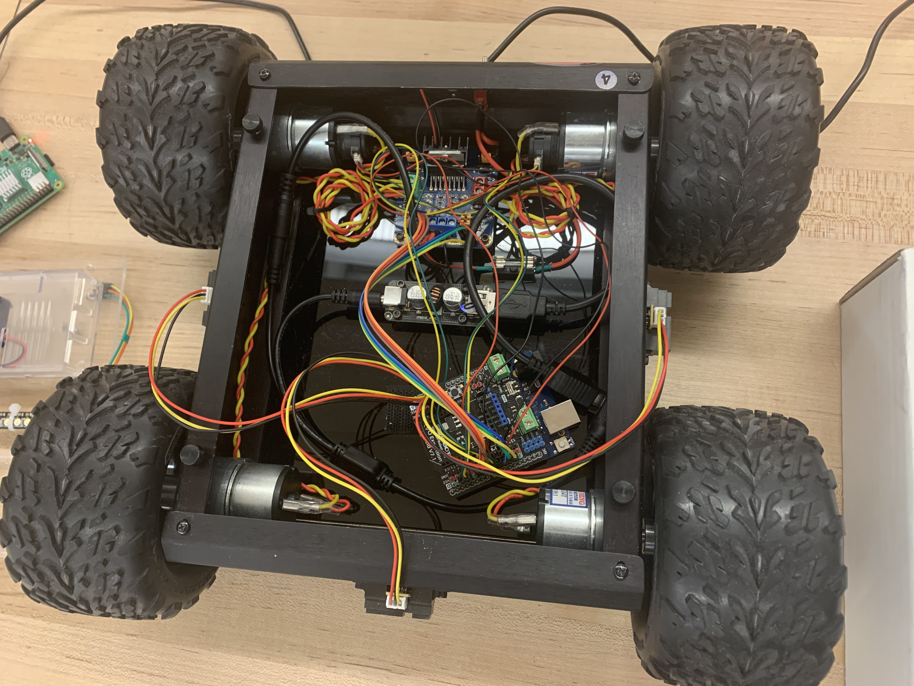
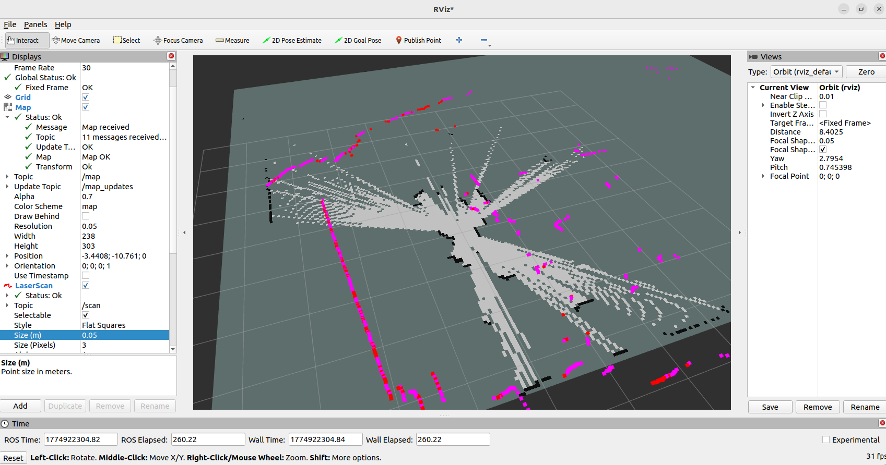
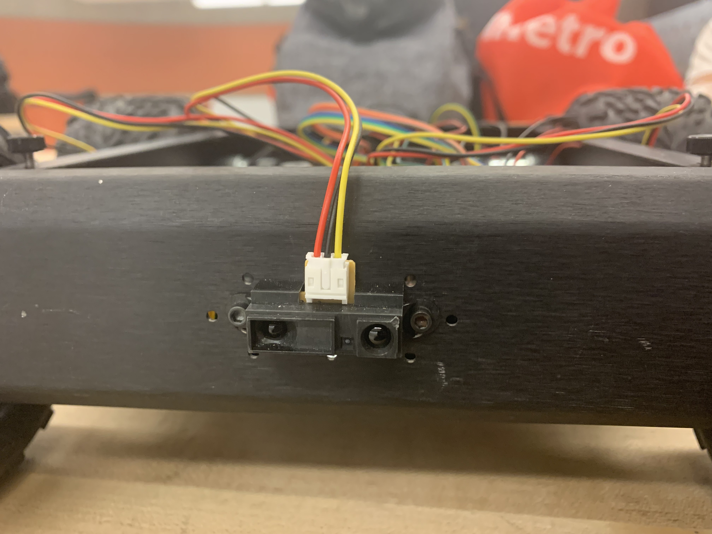

This robot was designed to achieve the hypothetical task of collecting 10 samples on the surface of Mars left behind by NASA’s Perseverance Rover. The robot utilized LIDAR, SHARP sensors, Arduino Uno, and Raspberry Pi along with the implementation of the Robot Operating System (ROS) to generate a map of the terrain and autonomously navigate to collect each sample.



Encoder ticks were tracked and used as a means for the robot to distinguish how far
it has travelled. Knowing the diameter of the wheels it was possible to determine the
distance travelled with each tick. Multiplying the distance per tick with the number of
ticks in total was then the total linear distance travelled.
With a 360 LIDAR mounted to the top of the robot chassis it was possible to generate
a map of the surrounding environment. Then using ROS, the LIDAR data was published to
a laser scan topic which could be visualized through RVIZ. This set the basis for the
robot to be able to navigate autonomously by providing it with an understanding of
its surroundings.